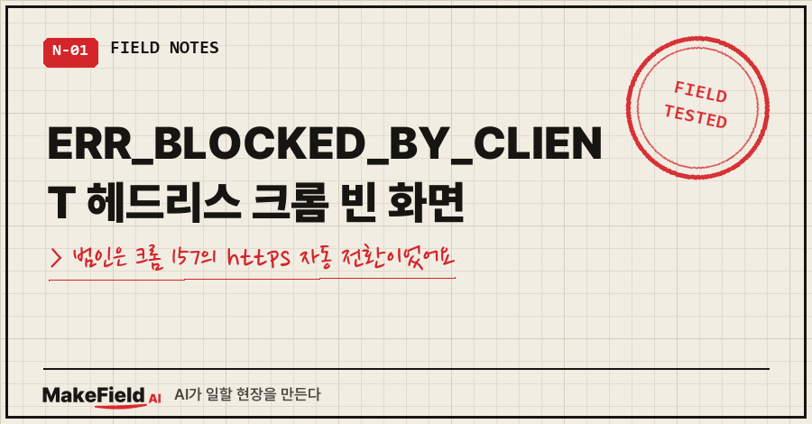
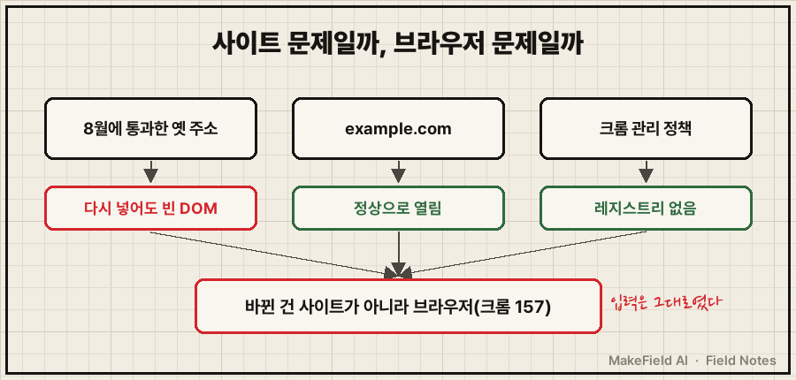
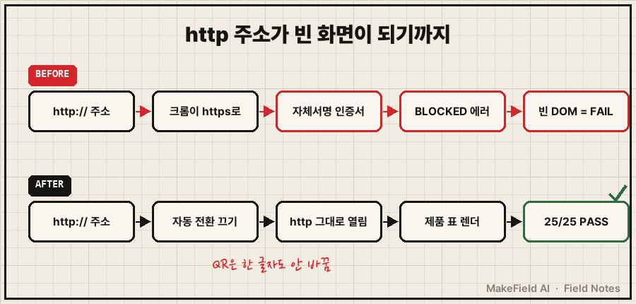
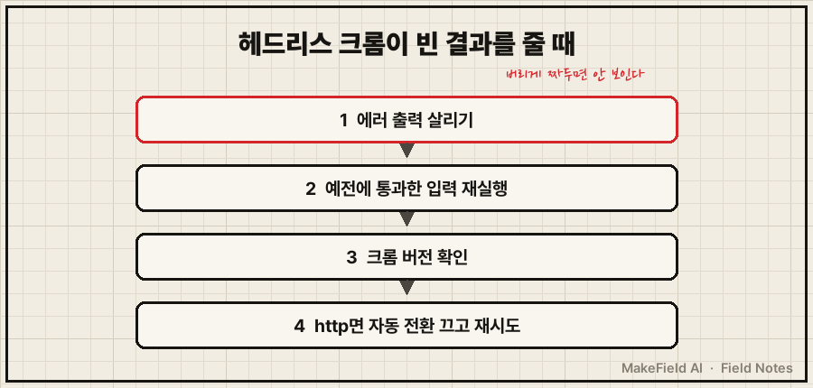

net::ERR_BLOCKED_BY_CLIENT광고 차단 확장도 없는 헤드리스 크롬이 이 에러를 내고 빈 화면만 돌려줬어요.
결론부터 말하면, 크롬 157이 http:// 주소를 스스로 https://로 바꿔 열었고, 그 사이트의 https 쪽 인증서가 자체서명이라 막힌 것이었습니다. 실행 옵션에 https 자동 전환을 끄는 플래그를 넣자 같은 주소 25개가 전부 정상으로 열렸어요. (2026년 11월, 윈도우 크롬 157.0.8103.79 기준)
이 에러를 검색하면 대부분 광고 차단기 얘기가 나와요. 그런데 매번 빈 임시 프로필로 띄우는 헤드리스 크롬엔 확장이 하나도 없습니다. 그래서 더 헤맸어요.
1. 석 달 전엔 멀쩡하던 검수가 왜 FAIL이 났을까?
제 본업은 제조 현장 엔지니어예요. 퇴근 뒤엔 작은 외주를 받아 스크립트로 처리하는데, 그중 하나가 QR 코드 제작이에요. 제품마다 정보 페이지 주소를 QR로 만들어 드리는 일입니다.
지난 8월에 검수까지 한 번에 도는 스크립트를 만들어 뒀어요(과정은 QR 코드 대량 생성 글에 있습니다).
순서는 이래요.
- QR 이미지 생성
- 만든 이미지를 다시 읽어서 주소 대조
- 주소가 살아 있는지(HTTP 200) 확인
- 헤드리스 크롬으로 페이지를 실제로 그려서, 화면 속 제품 표가 QR과 맞는지 대조
- 의뢰인이 준 자료의 수량과 만든 QR 개수 대조
11월 19일, 네 번째 주문 25개가 들어왔어요. AI한테 "지난 이력 보고 결과 내줘" 한 줄을 던졌는데, 나머지 단계는 25/25 통과, 4단계만 전부 FAIL이 떴습니다. 크롬이 그려 준 페이지 내용(DOM)이 텅 비어 있었거든요.
게다가 스크립트는 크롬의 에러 출력을 버리게 짜여 있었어요. 처음 눈에 보인 건 "빈 DOM" 한 줄뿐이었습니다..
2. 사이트 문제일까, 브라우저 문제일까?
QR이 틀렸으면 앞 단계에서 걸렸을 거예요. 그래서 범위를 좁혔습니다.
- 8월에 PASS했던 옛 주소를 다시 넣어 봄 → 똑같이 빈 DOM
- 아무 상관 없는 example.com → 정상
- 크롬 동작을 묶는 관리 정책 레지스트리 → 없음

석 달여 전 통과한 주소가 지금 실패하면, 바뀐 건 사이트가 아니라 내 쪽이에요. 원인을 실측해 보니 크롬은 이미 157 버전이었고, 빈 DOM 뒤에는 ERR_BLOCKED_BY_CLIENT가 숨어 있었습니다.
3. 크롬 https 자동 전환은 어떻게 막히게 만들었나?
크롬에는 HTTPS-Upgrades라는 기능이 있어요. 크롬 개발 메일링(blink-dev)의 "Intent to Ship: HTTPS Upgrades" 공지에 따르면, 주소창 이동이 http://면 먼저 https://로 바꿔 시도하고, 안 되면 http로 빠르게 되돌아오는 구조입니다.
제 경우는 이렇게 흘렀어요.

공지대로라면 http로 되돌아왔어야 하는데, 헤드리스 실행에선 그러지 않고 막힌 채 끝났어요. 왜 되돌아오지 않았는지는 끝까지 확인하지 못했습니다. 확인된 건 "자동 전환을 끄면 열린다"까지예요.
4. 해결: 크롬 https 자동 전환 끄는 플래그
검수 스크립트의 크롬 실행 줄 두 곳(DOM 뽑기, 증거 스크린샷)에 아래 옵션을 붙였어요.
--disable-features=HttpsUpgrades,HttpsFirstBalancedModeAutoEnable,HttpsFirstModeV2ForEngagedSites
--ignore-certificate-errorsDOM 뽑는 쪽 전체 모양은 이렇습니다(경로는 줄였어요).
chrome.exe --headless --disable-gpu --virtual-time-budget=9000 ^
--disable-features=HttpsUpgrades,... --ignore-certificate-errors ^
--user-data-dir="<임시 폴더>" --dump-dom "http://..." > dom.html다시 돌리니 5단계 전부 PASS, 종료코드 0. QR 이미지와 생성 코드는 한 글자도 안 바꿨어요.
솔직히 적으면, 두 옵션을 같이 넣어서 어느 쪽이 결정타였는지는 따로 쪼개 보지 않았어요. 그리고 --ignore-certificate-errors는 인증서 경고를 통째로 무시하는 옵션이라 검수용 임시 프로필에만 씁니다. 평소 쓰는 크롬엔 절대 넣지 마세요.
| 방법 | 고르지 않은/고른 이유 |
|---|---|
| QR 주소를 https로 바꾸기 | 주소는 의뢰인 것이고 이미 쓰이는 중이라 건드릴 수 없음 |
| 크롬 버전 묶어 두기 | 업데이트가 계속 오니 매번 버전과 싸워야 함 |
| 실행 옵션으로 자동 전환 끄기 | 검수 스크립트 안에서만 바뀜 → 선택 |
5. 헤드리스 크롬이 빈 결과를 줄 때 확인 순서

- 에러 출력부터 살린다. 저처럼 버리게 짜 두면 원인 메시지가 안 보여요.
- 예전에 통과한 입력을 다시 넣는다. 그것도 실패하면 입력이 아니라 도구 쪽이에요.
- 크롬 버전을 본다. 자동 업데이트가 조용히 올라가 있어요.
- 주소가
http://면 자동 전환을 끄고 다시 돌린다.
Q. ERR_BLOCKED_BY_CLIENT면 무조건 광고 차단기 아닌가요?
일반 크롬에선 그 경우가 많아요. 다만 확장 없는 헤드리스 크롬이 http 주소에서 이 에러를 내면 자동 전환부터 의심해 보세요.
Q. 크롬 설정 화면에서 끄면 안 되나요?
제 스크립트는 매번 새 임시 프로필로 크롬을 띄워서 설정이 남지 않아요. 그래서 실행 옵션으로 넣었습니다.
이번 일로 메모 한 줄을 남겼어요. "검수 4단계가 FAIL이면 QR부터 의심하지 말고 크롬 버전과 에러 출력부터 본다." 다음 주문 때 AI가 이 줄을 먼저 읽게 해 두었습니다.
스크립트가 어느 날 빈손으로 돌아오면, 코드보다 브라우저가 먼저 바뀌어 있을 때가 있어요. 이런 막힘과 고친 기록은 makefield.ai에서 더 볼 수 있습니다.
출처
- Chromium blink-dev, "Intent to Ship: HTTPS Upgrades" — http 이동을 https로 먼저 시도하고 실패 시 http로 되돌아오는 구조 → https://groups.google.com/a/chromium.org/g/blink-dev/c/cAS525en8XE (2026-11-22 확인)
- 실측: 개인 윈도우 PC, 크롬 157.0.8103.79, 2026-11-19 QR 검수 스크립트 재실행 기록(의뢰인·주소·제품 정보 제외)
태그: #ERR_BLOCKED_BY_CLIENT #헤드리스크롬 #크롬헤드리스 #dumpdom #크롬https자동전환 #HttpsUpgrades #크롬157 #자체서명인증서 #웹검수자동화 #QR코드검수 #파이썬자동화 #크롬자동화 #부업자동화 #막힐때해결 #MakeFieldAI